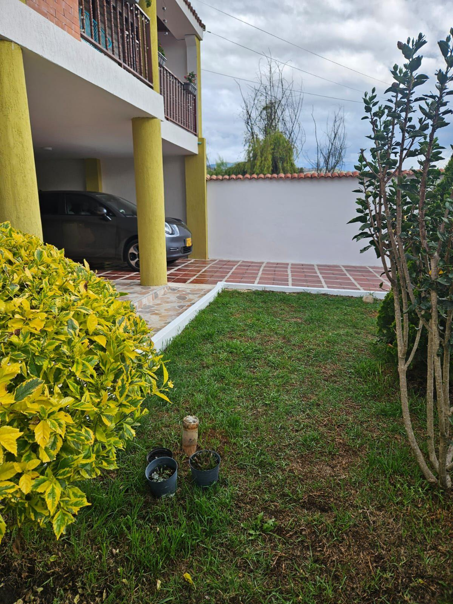
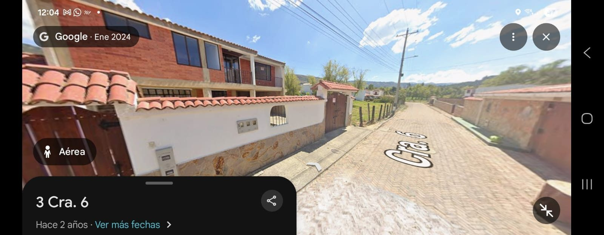

I.Internet

II.Antes de llegar
Las llaves — Vicky López
Las llaves del apartamento las tiene Vicky López. Por favor contáctenla antes de llegar a Sogamoso para coordinar la entrega.
Parqueadero
El parqueadero se comparte con el vecino, William Forero. Por favor sean considerados al estacionar para que ambos puedan usar el espacio cómodamente.
III.Alarma
Por favor avísennos al llegar y al salir
Cuando estén llegando a la casa, escríbannos para desactivar la alarma. Y al salir al final del viaje, también nos avisan para volverla a activar.

IV.Sobre la casa
Cocina y mercado
Pueden usar con confianza el mercado que encuentren en la nevera y las alacenas. Siéntanse como en casa.
Si necesitan elementos de aseo, los encuentran en los baños o en los cajones interiores de la cocina (lado en L).
Toallas, ropa de cama y juegos
En el clóset de la habitación auxiliar encontrarán:
- Toallas
- Ropa de cama
También encontrarán juegos y algunas cosas para entretenerse.
Si desean cambiar las sábanas, pueden usar las que encuentran en el clóset auxiliar. Al salir, simplemente dejen puestas las que usaron; no se preocupen por lavarlas, nosotros lo hacemos cuando regresemos.
Lavadora y ropa
Pueden usar la lavadora del apartamento y colgar la ropa en el tendedero del primer piso.
Recomendación piscina: usen preferiblemente toallas viejitas y, si pueden, laven aparte la ropa usada en piscina, porque suele quedar con olor fuerte o mancharse un poco por el cloro.
Entretenimiento
Pueden usar los televisores y el Alexa. Todo está conectado a internet y a plataformas de video para que disfruten y descansen.
- En el clóset auxiliar hay juegos para compartir en familia
- En la sala encontrarán libros para leer y relajarse
Nuestras plantas
Amamos mucho las plantas de la casa.
Si pueden ponerles un poquito de agua a las plantas internas y del balcón durante su estadía, ellas y nosotros se los agradeceremos muchísimo.
Para el frío y la lluvia
Iza suele ser fresquito. Si necesitan:
- Las ruanas están disponibles para ustedes
- Hay paraguas en el primer piso y encima de la nevera
Manejo de basuras
Basura normal: por favor sacarla en bolsas pequeñas y depositarla en las canecas del parque.
Residuos orgánicos (cáscaras, restos de comida, café…): déjenlos en la caneca roja trasera del primer piso y revuélvanlos un poco con la pala.
Reciclaje:
- Enjuagar envases cuando sea necesario
- Dejar reciclables en la caneca grande de la cocina
V.Para disfrutar Iza
Nuestros lugares favoritos en el pueblo y alrededores.